Customize your Mattermost theme#
 Available on all plans
Available on all plans
 Cloud and self-hosted deployments
Cloud and self-hosted deployments
The colors of the Mattermost user interface are customizable. You can choose from five standard themes designed by the Mattermost team, design your own theme based on a standard theme, or import your theme colors from a Slack instance. Your theme changes apply to all teams you’re a member of, and are visible across all Mattermost clients.
Tip
Mattermost Enterprise customers can configure a different theme for every team they’re a member of.
To customize your Mattermost theme:
Select the Settings  icon, then go to Display > Theme. Select Theme Colors to choose from five standard themes designed by the Mattermost team.
icon, then go to Display > Theme. Select Theme Colors to choose from five standard themes designed by the Mattermost team.
Using Mattermost in a browser or the desktop app, you can customize a standard theme further to truly make it your own. After selecting a standard theme, select Custom Theme and modify your color choices based on your preferences. See the custom themes documentation to learn what’s configurable, and see the custom theme examples documentation for inspiration.
Tap your profile picture, and select Settings, then go to Display > Theme.
Custom themes#
Select Custom Theme, then expand the Sidebar Styles, Center Channel Styles, and Link and Button Styles options to customize individual interface colors, such as backgrounds, links, text, and borders.
Your custom theme changes are applied in Mattermost as you make them. Select Save to confirm your theme changes. Discard your changes by exiting the Display Settings window and selecting Yes, Discard.
Center channel styles#
- Center Channel BG
Color of the center pane, right-hand sidebar and all dialog window backgrounds.
- Center Channel Text
Color of all the text - with the exception of mentions, links, hashtags and code blocks - in the center pane, right-hand sidebar, and dialogs.
- New Message Separator
The new message separator appears below the last read message when you navigate to a channel with unread messages.
- Error Text Color
Color of all error text.
- Mention Highlight BG
Highlight color behind your words that trigger mentions in the center pane and right-hand sidebar.
- Mention Highlight Link
Text color of your words that trigger mentions in the center pane and right-hand sidebar.
- Code Theme
Background and syntax colors for all code blocks.
Export your custom theme#
Export a theme from Mattermost by copying the theme values from the Custom Theme menu.
Import a custom theme#
Import a theme into Mattermost by pasting the theme values into the Custom Theme menu. Copy existing theme values, then paste the theme values into the Copy and paste to share theme colors field. Select Save to confirm your theme changes.
Import theme from Slack#
To import a theme, in Slack, go to Preferences > Themes, select Create a custom theme, then copy the theme color values.
In Mattermost, select Import theme colors from Slack, then paste the color values into the input box and select Submit. Any theme settings that are not customizable in Slack will default to the “Mattermost” standard theme settings. Select Save to confirm your theme changes.
Custom theme examples#
Customize your theme colors and share them with others by copying and pasting theme values into the input box. Below are some example themes with their corresponding theme values.
Mattermost#
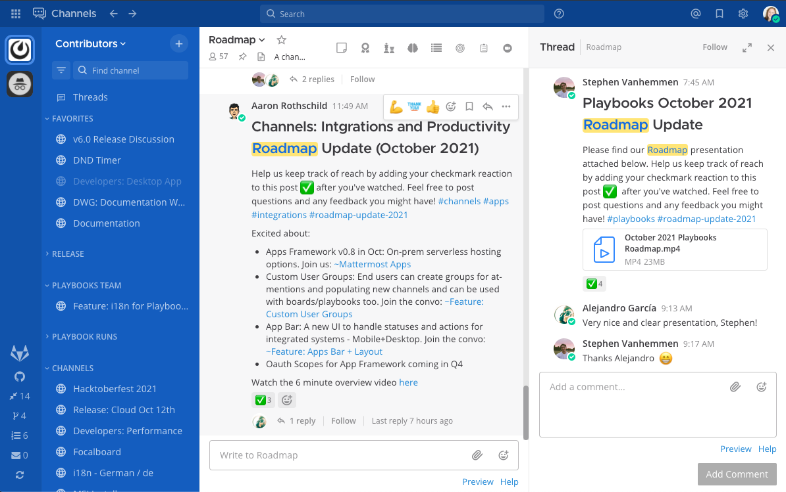Want this theme? Copy and paste the following code into Mattermost:
{"sidebarBg":"#145dbf","sidebarText":"#ffffff","sidebarUnreadText":"#ffffff","sidebarTextHoverBg":"#4578bf","sidebarTextActiveBorder":"#579eff","sidebarTextActiveColor":"#ffffff","sidebarHeaderBg":"#1153ab","sidebarTeamBarBg":"#0b428c","sidebarHeaderTextColor":"#ffffff","onlineIndicator":"#06d6a0","awayIndicator":"#ffbc42","dndIndicator":"#f74343","mentionBg":"#ffffff","mentionBj":"#ffffff","mentionColor":"#145dbf","centerChannelBg":"#ffffff","centerChannelColor":"#3d3c40","newMessageSeparator":"#ff8800","linkColor":"#2389d7","buttonBg":"#166de0","buttonColor":"#ffffff","errorTextColor":"#fd5960","mentionHighlightBg":"#ffe577","mentionHighlightLink":"#166de0","codeTheme":"github"}
Organization#
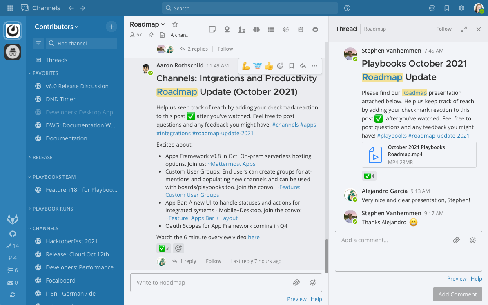Want this theme? Copy and paste the following code into Mattermost:
{"sidebarBg":"#2071a7","sidebarText":"#ffffff","sidebarUnreadText":"#ffffff","sidebarTextHoverBg":"#136197","sidebarTextActiveBorder":"#7ab0d6","sidebarTextActiveColor":"#ffffff","sidebarHeaderBg":"#2f81b7","sidebarTeamBarBg":"#256996","sidebarHeaderTextColor":"#ffffff","onlineIndicator":"#7dbe00","awayIndicator":"#dcbd4e","dndIndicator":"#ff6a6a","mentionBg":"#fbfbfb","mentionColor":"#2071f7","centerChannelBg":"#f2f4f8","centerChannelColor":"#333333","newMessageSeparator":"#ff8800","linkColor":"#2f81b7","buttonBg":"#1dacfc","buttonColor":"#ffffff","errorTextColor":"#a94442","mentionHighlightBg":"#f3e197","mentionHighlightLink":"#2f81b7","codeTheme":"github"}
Mattermost Dark#
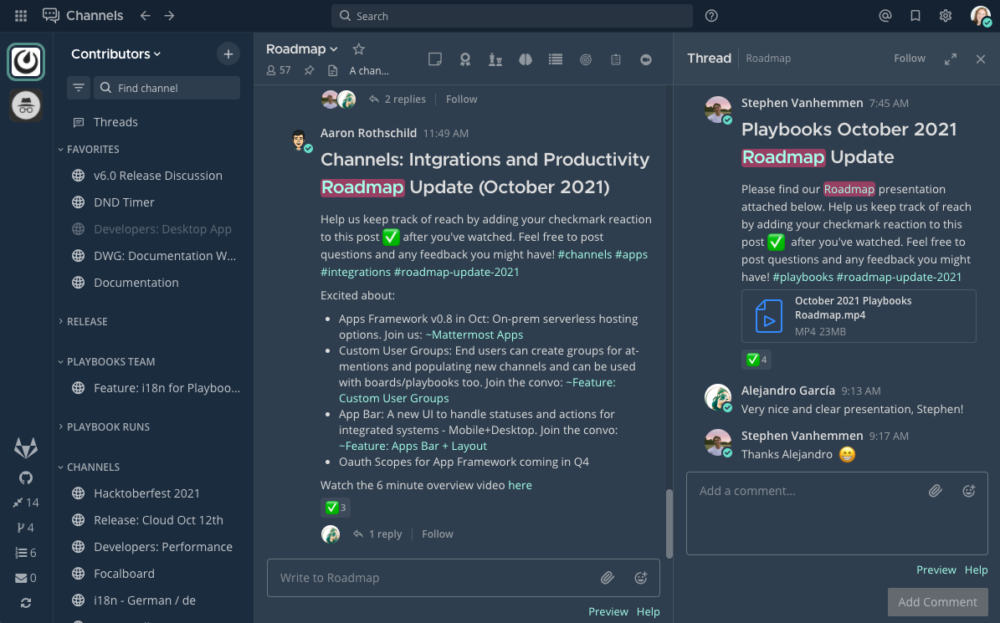Want this theme? Copy and paste the following code into Mattermost:
{"sidebarBg":"#1b2c3e","sidebarText":"#ffffff","sidebarUnreadText":"#ffffff","sidebarTextHoverBg":"#4a5664","sidebarTextActiveBorder":"#66b9a7","sidebarTextActiveColor":"#ffffff","sidebarHeaderBg":"#1b2c3e","sidebarTeamBarBg":"#152231","sidebarHeaderTextColor":"#ffffff","onlineIndicator":"#65dcc8","awayIndicator":"#c1b966","dndIndicator":"#e81023","mentionBg":"#b74a4a","mentionColor":"#ffffff","centerChannelBg":"#2f3e4e","centerChannelColor":"#dddddd","newMessageSeparator":"#5de5da","linkColor":"#a4ffeb","buttonBg":"#4cbba4","buttonColor":"#ffffff","errorTextColor":"#ff6461","mentionHighlightBg":"#984063","mentionHighlightLink":"#a4ffeb","codeTheme":"solarized-dark"}
Windows Dark#
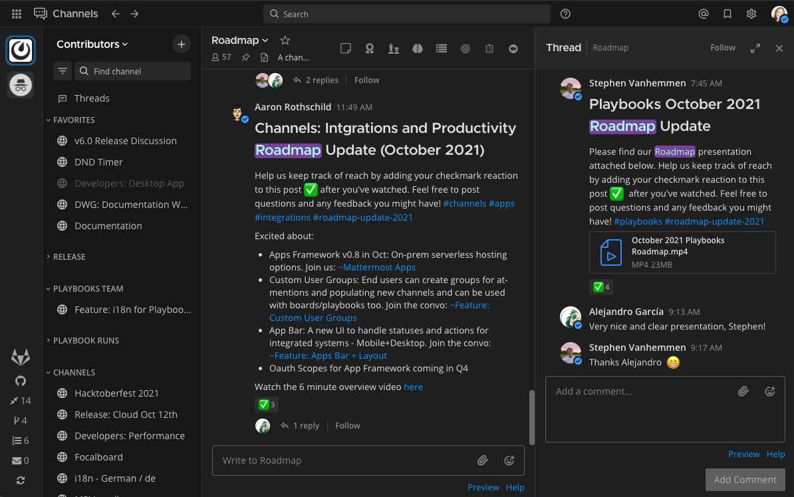Want this theme? Copy and paste the following code into Mattermost:
{"sidebarBg":"#171717","sidebarText":"#ffffff","sidebarUnreadText":"#ffffff","sidebarTextHoverBg":"#302e30","sidebarTextActiveBorder":"#196caf","sidebarTextActiveColor":"#ffffff","sidebarHeaderBg":"#1f1f1f","sidebarTeamBarBg":"#181818","sidebarHeaderTextColor":"#ffffff","onlineIndicator":"#399fff","awayIndicator":"#c1b966","dndIndicator":"#e81023","mentionBg":"#0177e7","mentionColor":"#ffffff","centerChannelBg":"#1f1f1f","centerChannelColor":"#dddddd","newMessageSeparator":"#cc992d","linkColor":"#0d93ff","buttonBg":"#0177e7","buttonColor":"#ffffff","errorTextColor":"#ff6461","mentionHighlightBg":"#784098","mentionHighlightLink":"#a4ffeb","codeTheme":"monokai"}
GitHub Theme#
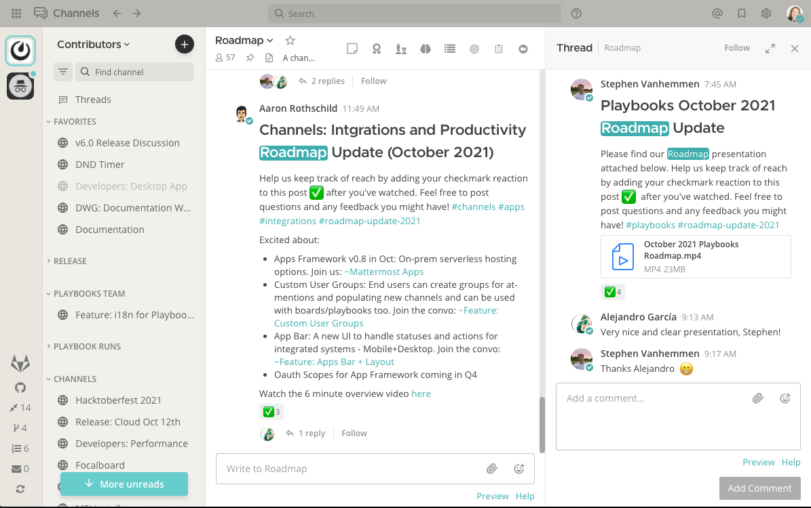Want this theme? Copy and paste the following code into Mattermost:
{"awayIndicator":"#D4B579","buttonBg":"#66CCCC","buttonColor":"#FFFFFF","centerChannelBg":"#FFFFFF","centerChannelColor":"#444444","codeTheme":"github","linkColor":"#3DADAD","mentionBg":"#66CCCC","mentionColor":"#FFFFFF","mentionHighlightBg":"#3DADAD","mentionHighlightLink":"#FFFFFF","newMessageSeparator":"#F2777A","onlineIndicator":"#52ADAD","sidebarBg":"#F2F0EC","sidebarHeaderBg":"#E8E6DF","sidebarHeaderTextColor":"#424242","sidebarText":"#2E2E2E","sidebarTextActiveBorder":"#66CCCC","sidebarTextActiveColor":"#594545","sidebarTextHoverBg":"#E0E0E0","sidebarUnreadText":"#515151"}
Monokai Theme#
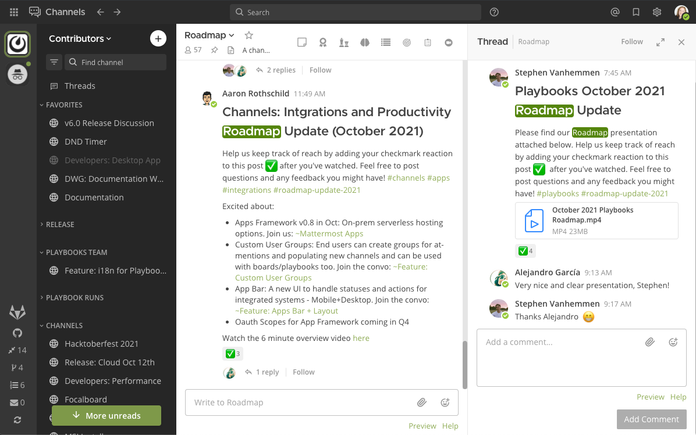Want this theme? Copy and paste the following code into Mattermost:
{"awayIndicator":"#B8B884","buttonBg":"#90AD58","buttonColor":"#FFFFFF","centerChannelBg":"#FFFFFF","centerChannelColor":"#444444","codeTheme":"monokai","linkColor":"#90AD58","mentionBg":"#7E9949","mentionColor":"#FFFFFF","mentionHighlightBg":"#54850C","mentionHighlightLink":"#FFFFFF","newMessageSeparator":"#90AD58","onlineIndicator":"#99CB3F","sidebarBg":"#262626","sidebarHeaderBg":"#363636","sidebarHeaderTextColor":"#FFFFFF","sidebarText":"#FFFFFF","sidebarTextActiveBorder":"#7E9949","sidebarTextActiveColor":"#FFFFFF","sidebarTextHoverBg":"#525252","sidebarUnreadText":"#CCCCCC"}
Solarized Dark Theme#
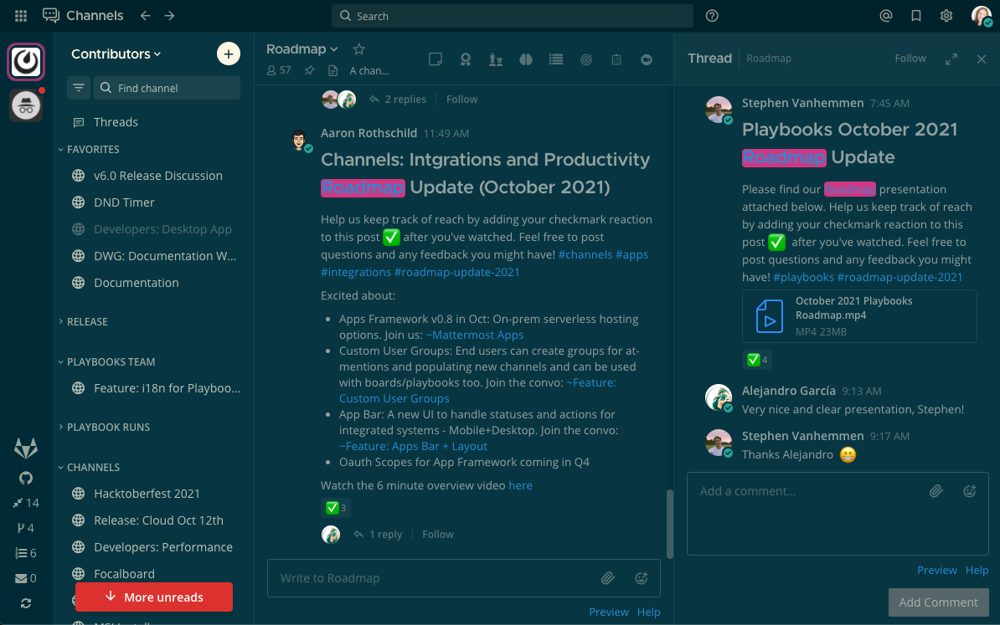Want this theme? Copy and paste the following code into Mattermost:
{"awayIndicator":"#E0B333","buttonBg":"#859900","buttonColor":"#fdf6e3","centerChannelBg":"#073642","centerChannelColor":"#93a1a1","codeTheme":"solarized-dark","linkColor":"#268bd2","mentionBg":"#dc322f","mentionColor":"#ffffff","mentionHighlightBg":"#d33682","mentionHighlightLink":"#268bd2","newMessageSeparator":"#cb4b16","onlineIndicator":"#2AA198","sidebarBg":"#073642","sidebarHeaderBg":"#002B36","sidebarHeaderTextColor":"#FDF6E3","sidebarText":"#FDF6E3","sidebarTextActiveBorder":"#d33682","sidebarTextActiveColor":"#FDF6E3","sidebarTextHoverBg":"#CB4B16","sidebarUnreadText":"#FDF6E3","errorTextColor":"#dc322f"}
Gruvbox Dark Theme#
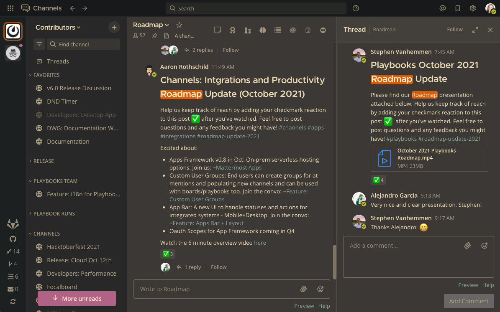Want this theme? Copy and paste the following code into Mattermost:
{"awayIndicator":"#fabd2f","buttonBg":"#689d6a","buttonColor":"#ebdbb2","centerChannelBg":"#3c3836","centerChannelColor":"#ebdbb2","codeTheme":"monokai","errorTextColor":"#fb4934","linkColor":"#83a598","mentionBg":"#b16286","mentionColor":"#fbf1c7","mentionHighlightBg":"#d65d0e","mentionHighlightLink":"#fbf1c7","newMessageSeparator":"#d65d0e","onlineIndicator":"#b8bb26","sidebarBg":"#282828","sidebarHeaderBg":"#1d2021","sidebarHeaderTextColor":"#ebdbb2","sidebarText":"#ebdbb2","sidebarTextActiveBorder":"#d65d0e","sidebarTextActiveColor":"#fbf1c7","sidebarTextHoverBg":"#d65d0e","sidebarUnreadText":"#fe8019"}
One Dark Theme#
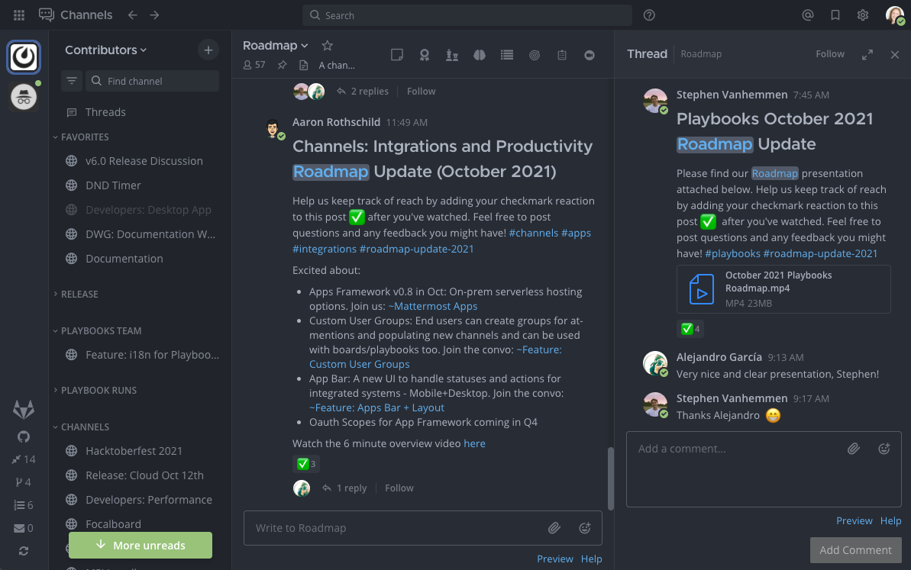Visit the one-dark-mattermost GitHub repository online:.
Want this theme? Copy and paste the following code into Mattermost:
{"sidebarBg":"#21252b","sidebarText":"#abb2bf","sidebarUnreadText":"#abb2bf","sidebarTextHoverBg":"#3a3f4b","sidebarTextActiveBorder":"#4d78cc","sidebarTextActiveColor":"#d7dae0","sidebarHeaderBg":"#282c34","sidebarHeaderTextColor":"#abb2bf","onlineIndicator":"#98c379","awayIndicator":"#d19a66","dndIndicator":"#be5046","mentionBg":"#98c379","mentionColor":"#ffffff","centerChannelBg":"#282c34","centerChannelColor":"#abb2bf","newMessageSeparator":"#c67add","linkColor":"#61afef","buttonBg":"#4d78cc","buttonColor":"#ffffff","errorTextColor":"#f44747","mentionHighlightBg":"#525a69","mentionHighlightLink":"#61afef","codeTheme":"monokai","mentionBg":"#98c379"}
Discord Dark Theme#
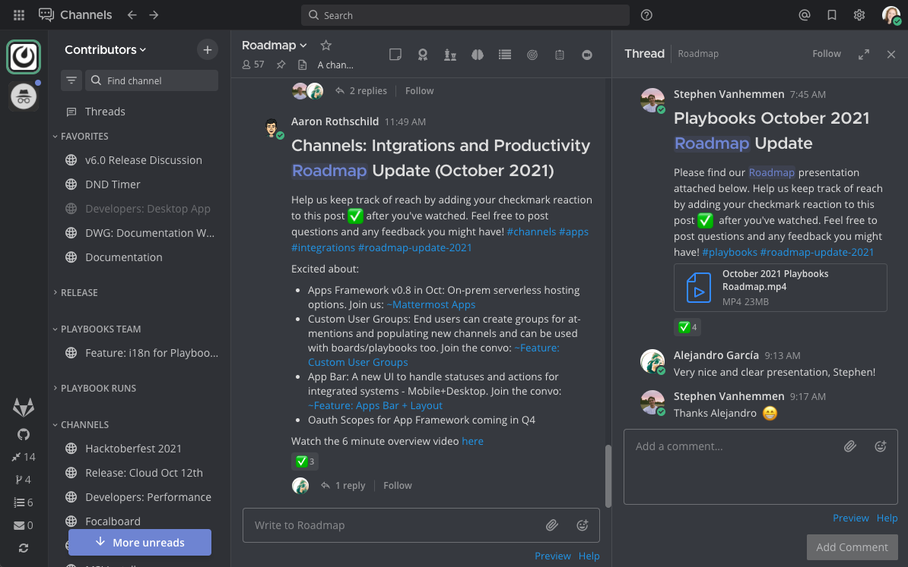Visit the mattermost-discord-dark GitHub repository online:.
Want this theme? Copy and paste the following code into Mattermost:
{"sidebarBg":"#2f3136","sidebarText":"#ffffff","sidebarUnreadText":"#ffffff","sidebarTextHoverBg":"#33363c","sidebarTextActiveBorder":"#66cfa0","sidebarTextActiveColor":"#ffffff","sidebarHeaderBg":"#27292c","sidebarHeaderTextColor":"#ffffff","onlineIndicator":"#43b581","awayIndicator":"#faa61a","dndIndicator":"#f04747","mentionBg":"#6e84d2","mentionBg":"#6e84d2","mentionColor":"#ffffff","centerChannelBg":"#36393f","centerChannelColor":"#dddddd","newMessageSeparator":"#6e84d2","linkColor":"#2095e8","buttonBg":"#43b581","buttonColor":"#ffffff","errorTextColor":"#ff6461","mentionHighlightBg":"#3d414f","mentionHighlightLink":"#6e84d2","codeTheme":"monokai"}
Night Owl Dark Theme#
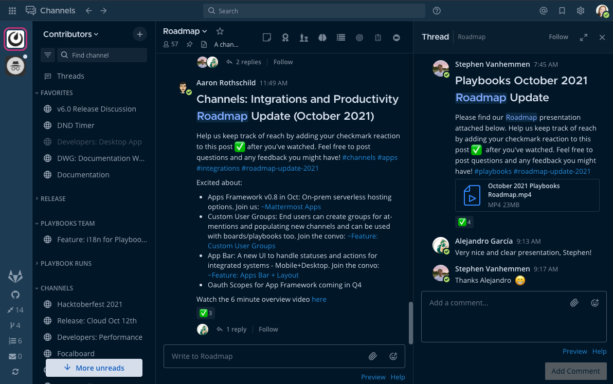Want this theme? Copy and paste the following code into Mattermost:
{"sidebarBg":"#011627","sidebarText":"#d6deeb","sidebarUnreadText":"#d6deeb","sidebarTextHoverBg":"#1d3b53","sidebarTextActiveBorder":"#ff2c83","sidebarTextActiveColor":"#82aaff","sidebarHeaderBg":"#1d3b53","sidebarHeaderTextColor":"#d6deeb","onlineIndicator":"#addb67","awayIndicator":"#ffbc42","dndIndicator":"#f74343","mentionBg":"#d6deeb","mentionBg":"#d6deeb","mentionColor":"#145dbf","centerChannelBg":"#011627","centerChannelColor":"#d6deeb","newMessageSeparator":"#ff8800","linkColor":"#2389d7","buttonBg":"#166de0","buttonColor":"#011627","errorTextColor":"#fd5960","mentionHighlightBg":"#0b2942","mentionHighlightLink":"#82aaff","codeTheme":"solarized-dark"}
Dark Theme (desktop app only)#
On Windows and macOS, the system display preference that you set on your computer (e.g., Light Mode or Dark Mode) is also applied to the Mattermost desktop app.
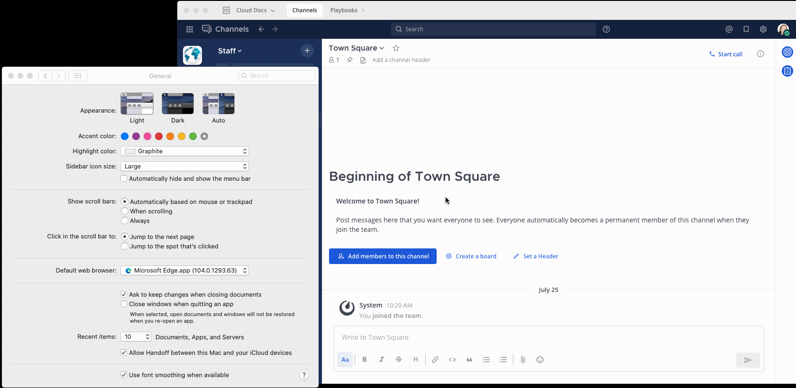On Linux, you can manage this manually via the View menu.